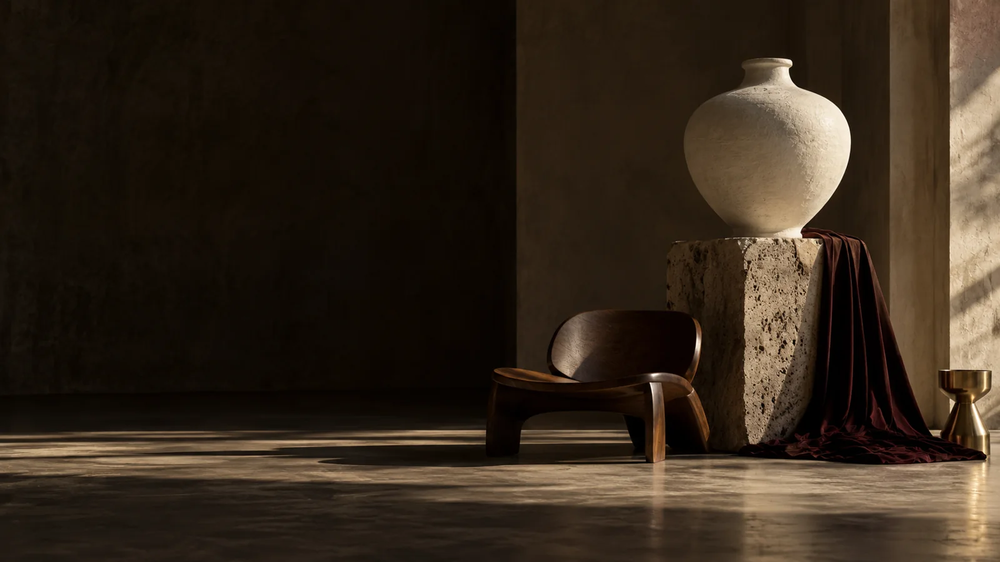

Livraison choisie
Retrait fictif gratuit ou livraison standard à 3 500 FCFA, offerte dès 100 000 FCFA après remise. Express : 7 500 FCFA.

COLLECTION N° 01 / OBJETS CHOISIS
Des objets qui ne remplissent pas l’espace.
Ils lui donnent du sens.
01 / Le regard NOIRÉ
Une courbe que l’on suit du regard. Un grain que l’on devine sous les doigts. Nous imaginons une autre manière de choisir : attentive, personnelle, durable dans l’intention.
L’univers NOIRÉ02 / La sélection
Quatre objets, quatre façons d’habiter votre quotidien.
03 / Les collections
04 / Les nouveautés
Éditions imaginaires, nouvelles perspectives.

06 / Les pièces remarquées
Sélection éditoriale de démonstration. Aucun classement de ventes réelles.
 NOIRÉ — ÉTUDE DE MATIÈRE
NOIRÉ — ÉTUDE DE MATIÈRE07 / La matière avant tout
Le grain d’une pierre. La chaleur d’un cuir. La lumière sur le verre. NOIRÉ explore la rencontre entre des matières et des formes simples. Les compositions photographiques sont créées par IA pour ce concept.
Explorer les matières NOIRÉ — ÉTUDE DE MATIÈRE
NOIRÉ — ÉTUDE DE MATIÈRE08 / Un autre regard
Ni accumulation, ni collection figée. Des pièces qui dialoguent avec vos usages et votre sensibilité. Le regard compte autant que l’objet.
Notre philosophie09 / L’attention NOIRÉ
Retrait fictif gratuit ou livraison standard à 3 500 FCFA, offerte dès 100 000 FCFA après remise. Express : 7 500 FCFA.
Conditions illustratives : demande de retour sous 14 jours, article non utilisé. Aucun retour réel n’est géré.
Emballage de démonstration imaginé pour protéger l’objet et prolonger le plaisir de la découverte.
10 / Votre prochain coup de cœur